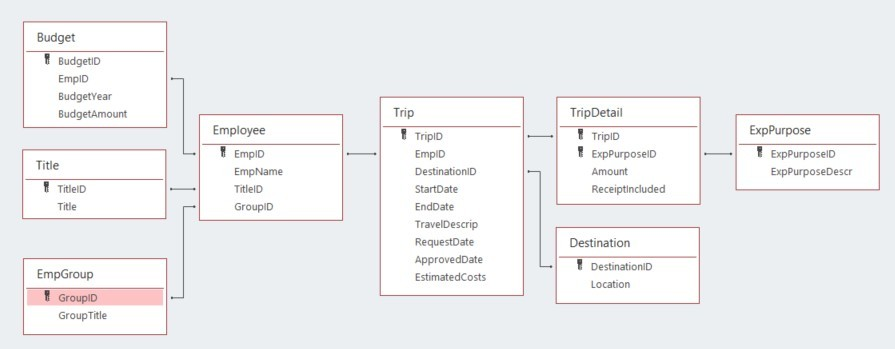

Analytics mindset
Case 4: Managerial SQL
Overview
Most accounting data is stored in one or more relational databases. To work with the data — whether extracting, transforming or loading the data — accountants frequently need to write SQL code. SQL stands for Structured Query Language. It is a basic programming language that allows you to work with data stored in a database. Thus, SQL becomes an important part of the extract, transform and load (ETL) process in dealing with data. The ETL process is part of an analytics mindset. As a reminder, an analytics mindset is the ability to:
Ask the right questions
Extract, transform and load relevant data
Apply appropriate data analytics techniques
Interpret and share the results with stakeholders
Because of the ubiquitous nature of SQL, there are numerous resources available to learn the basic syntax of this language. Thus, this case does not review the basics of SQL. Rather, this case focuses on using SQL to answer managerial questions. If you would like to learn SQL, we recommend reviewing the lessons under the heading “SQL Tutorial” available at https://www.w3schools.com/sql/.
Your data
Canadian government workers are required by law to document travel-related expenses. The government collects the travel information and makes it available at https://open.canada.ca/data/en/dataset/009f9a49-c2d9-4d29-a6d4-1a228da335ce. The case incorporates this data with simulated data to provide a rich data environment (over 200,000 lines of data). Therefore, you should consider this data fictional, and you should not extrapolate or project findings from this data set on the real world.
The data has been extracted, transformed and loaded into a Microsoft Access data set. The data set is provided to you in the Microsoft Access file, Analytics_mindset_case_studies_OhCanada2.accdb. A basic schema for this data is included in the image on the following page.

The following are descriptions of each of the fields contained in the database. Fields are separated by table. The ID fields (i.e., BudgetID, TitleID, GroupID) are not separately defined; they comprise integers that uniquely identify the rows in each table. Each ID field functions as a primary or foreign key for the database.
Budget:
BudgetYear: the four-digit year that corresponds to the annual budget year for an employee
BudgetAmount: an employee’s annual budget amount
Title:
Title: a description of each employee title
EmpGroup:
GroupTitle: a description of each employee group
Employee:
EmpName: the first and last names of each employee
Trip:
StartDate: the beginning date for employee travel
EndDate: the ending date for employee travel
TravelDescript: a description provided by the employee of their travel
RequestDate: the date an employee requested permission to travel
ApprovedDate: the date a supervisor approved the employee’s travel
EstimatedCosts: the employee’s estimated amount the trip would cost made at the time they requested permission to travel
TripDetail:
Amount: the dollar amount of costs for the employee incurred for each purpose on each trip
ReceiptIncluded: a dummy variable that is equal to “Y” if the employee included a receipt and “N” if the employee did not include a receipt.
Destination:
Location: a country description of the primary location for the travel (While employees can travel to multiple locations on a trip, only the first destination of the trip is recorded.)
ExpPurpose:
ExpPurposeDescr: a description of each category of employee expenses
Required
Your task is to answer each of the following questions using the Microsoft Access file provided for this case and submit the answers in a Word document for grading. Save your document as OhCanada2_FirstNameLastName.docx. As you answer the questions, make sure to:
Carefully label the output columns as specified in the images.
Include the columns in the order specified in the images of the output header shown in each problem.
Sort the data as specified in the problem.
List the number of rows returned from executing the query.
The SQL for all these problems will start with a SELECT statement and end with a semicolon.
Show each employee’s budgeted amount and total spent for 2019. To compute the total amount spent in 2019, include transactions based on the year of the start date. Sort the data alphabetically by employee name. The output header should look like this:
SQL:
Number of rows:
Show each employee group’s total estimated costs, actual costs, and the difference in estimated and actual costs for all trips taken in 2019. Compute the difference in costs as EstCosts minus ActCosts. Use the year of the trip’s start date for computing the years. Sort the data by DiffCosts (descending) and then by the group’s title (ascending). The output header should look like this:
SQL:
Number of rows:
On average, how much do employees spend on food per day? Because of outliers in the data, only include trips where the number of days between the StartDate and EndDate of the trip is between one and 14 days, inclusive. Include all dates in the database that fit this criterion. Round your answer to two decimal places (e.g., 12.34). The output header should look like this:
SQL:
Number of rows:
For the previous problem, calculate the average amount spent on food per day for each year. To determine the year, use the trip StartDate. Sort the data by the year (ascending). The output header should look like this:
SQL:
Number of rows:
Booking travel closer to the date you leave usually costs more money. On average, how many days before traveling does each employee group get their travel approved? Compute the ApprovalToTravelDays field by subtracting the StartDate from the ApprovedDate. Sort the data by ApprovalToTravelDays (descending) and then by group title. The output header should look like this:
SQL:
Number of rows:
Which agencies have the largest budgets for 2020? Make sure to include all agencies, even if they don’t have a budgeted amount. Sort the data in descending order by TotalBudget (descending) and then by group title. The output header should look like this:
SQL:
Number of rows:
COVID-19 reduced travel expenditures by a significant amount. What was the difference in total travel expenditures between 2020 and 2019? Use the StartDate field to determine the year of expenditure. Make sure to subtract 2019 expenditures from 2020 expenditures. Round the DiffExp column to the nearest whole dollar after calculating the difference. Do not round the other two fields. The output header should look like this:
SQL:
Number of rows:
Change the query results to the previous problem so that you can see the differences by month. That is, show monthly travel costs for 2020 and 2019 and the difference between the two years for each month. Use the StartDate field to determine the year of expenditure. Make sure to subtract 2019 expenditures from 2020 expenditures. Round the DiffExp column to the nearest whole dollar after calculating the difference. Sort the data by month so one is first, two is second, etc. The output header should look like this:
SQL:
Number of rows:
Assume that COVID-19 travel restrictions will impact the first half of 2021, but not the second half. As such, you want to assign a budget to each employee group that is equal to half the group’s 2020 budgeted amount. Create a report that shows each employee group and what its budget will be for 2021 if the group gets half the budget it received in 2020. Sort your answer so that the groups with the highest 2021 budget are listed first. If there are any ties in sorting, then sort by the group’s title (ascending). The output header should look like this:
SQL:
Number of rows:
Employees who can generate their own questions and answers are very valuable. Write three questions that would be important for a manager to understand. For each question, briefly explain why the answer is useful. Then, write the query that answers the question.